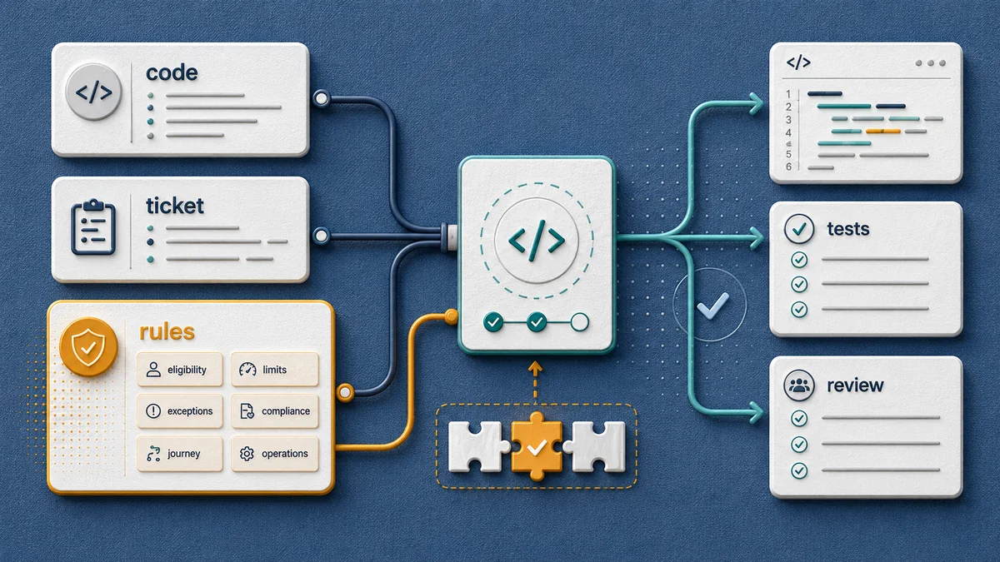
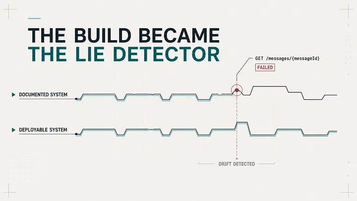
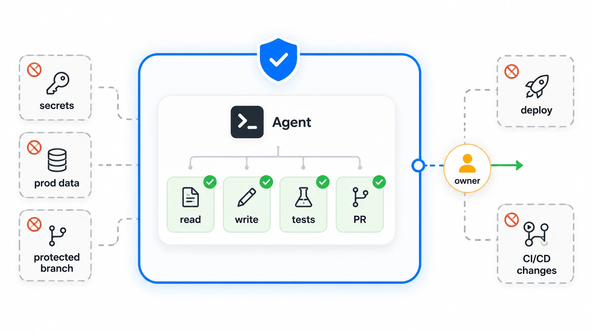

New to AI concepts
Start with plain-English foundations for AI, machine learning, LLM systems, and the wider AI ecosystem.
Browse this path Start with AI, Machine Learning and Data Science — Explained SimplyWriting
Essays, series, and practical explanations from Software Signal—written to clarify engineering questions, examine evidence, and make the work useful to practitioners.
The latest essays, in one stream, whether they were published here or with an external publication.
 The Frontend Passed. The Experience Didn’t.
Published on Medium
The Frontend Passed. The Experience Didn’t.
Published on Medium
 Cursor Just Launched Its Own Git Forge. It’s Built for AI Agents.
Published in Generative AI
Cursor Just Launched Its Own Git Forge. It’s Built for AI Agents.
Published in Generative AI
 Agent Plugins 1.0: Engineering Process Is Becoming Installable
Published in Generative AI
Agent Plugins 1.0: Engineering Process Is Becoming Installable
Published in Generative AI
 Your Repository Has a Truth Problem
Published in Analyst’s Corner
Your Repository Has a Truth Problem
Published in Analyst’s Corner
 Your Coding Agent Shouldn’t Work Alone
Published in Towards AI
Your Coding Agent Shouldn’t Work Alone
Published in Towards AI
 I Stopped Trusting My Coding Agent to Read the Docs
Published on Medium
I Stopped Trusting My Coding Agent to Read the Docs
Published on Medium

Business Rules as Context: The Missing Layer in AI-Assisted Development Published on Medium
I Made Architecture Documentation Fail the Build When It Lies Published in Level Up Coding
The Agent Risk Register: What to Check Before Letting AI Act Read on suyogjoshi.comStart with the reader path closest to what brought you here.
Start with plain-English foundations for AI, machine learning, LLM systems, and the wider AI ecosystem.
Browse this path Start with AI, Machine Learning and Data Science — Explained SimplyFollow the ordered software engineering series on context, repositories, review, agents, and orchestration.
Browse this path Start with Stop Prompting Harder. Start Giving Better Context.Read about context, knowledge debt, process, evidence, and the operating model changes behind useful AI adoption.
Browse this path Start with Knowledge Debt Is the New Technical DebtJump to system stories, workflow experiments, demos, and practical builds connected to the writing.
Browse this path Start with How I Used Two AIs to Build a Software Engineering SystemA structured reading path for software engineers working with AI assistants.
Practical guide
Context, codebases, work systems, reviews, agents, and orchestration — a practical path through AI-assisted software engineering.
Start the seriesBrowse the writing by theme. These are topic groupings, not date-based feeds or separate series.
Topic cluster
Begin here if you want the concepts behind AI, machine learning, data science, and LLM systems explained without hype.
Prefer guided practice? Follow the staged path from Python foundations for data science through data analysis and machine learning.
Topic cluster
Practical essays on the context, repository structure, prompts, and review habits that make AI-assisted delivery more reliable.
Topic cluster
How architecture, boundaries, contracts, ownership, and review change when AI makes implementation faster.
Topic cluster
How business rules, documentation, standards, and organizational knowledge become usable context for humans and AI assistants.
Topic cluster
Practical judgment for using AI assistants, reviewing generated work, assigning tasks, and coordinating agent-like workflows.
Topic cluster
How teams review AI-assisted work, evaluate evidence, scale scrutiny with risk, and keep human accountability visible.
Topic cluster
For architects and leaders thinking about AI adoption, delivery systems, process quality, evidence, and engineering standards.
Topic cluster
Articles connected to practical builds, workflow experiments, and system-level explorations. The deeper build notes and demos live in Systems.
Writing to systems
The Writing page explains the ideas and tradeoffs. The Systems section shows applied experiments, demos, architecture notes, and working examples.